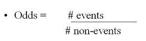
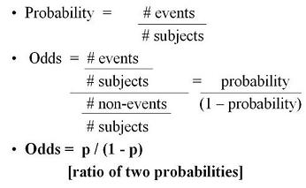

Odds and Probability
Lead Author(s): Jeff Martin, MD
Odds = Probability of an Event

Odds are most simply calculated as the number of events divided by the number of non-events.

The formal way to describe the odds is as the probability of the event divided by the probability of the non-event.
So odds are the ratio of two fractions:
- the number of events divided by the number of subjects ( the probability of the event) and
- that fraction divided by the number of non-events divided by the number of subjects ( the probability of the non-event).
So the formula for odds is p / (1 - p).
Since both fractions have the number of subjects in the denominator,
- they reduce to our first presentation of odds as the number of events divided by the number of non-events.
Probability and Odds
If event occurs 1 of 5 times, probability = 0.2
Out of 5 times, 1 time will be the event and 4 times will be the non-event, odds = 0.25
- Odds = 1/5 / 4/5 = 1/4 = 0.25
Calculating the odds without the number of subjects:
- by the ratio of the number of events (1)
- by the number of non-events (4)
- odds = 1/4 = 0.25
Calculating Probability Given Odds
To calculate probability given the odds:
- Probability = odds/1+ odds To go in the other direction from odds to probability:
- Divide the odds by 1 + odds.
- In this example, (1/4) / (1+1/4) =
- (1/4) / (5/4) =
- 1/5, the probability
Odds versus Probability
Odds is less intuitive than probability (probably wouldn't say "my odds of dying are 1/4")
No less legitimate mathematically, just not so easily understood
Also important because the log odds of the outcome is given by the coefficient of a predictor in a logistic regression
- In multivariate analysis of a dichotomous outcome logistic regression is used and the coefficients, the betas, from a logistic regression give the odds ratio by raising e to the beta (exponentiating it on the natural logarithm scale).